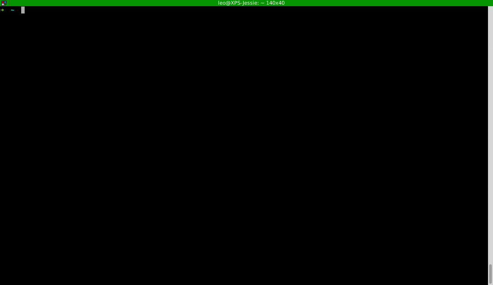

Grabando la consola
Quería compartirles estos dos programas que sirven para grabar nuestros pasos en la consola.
TTYGIF
Un programa escrito en C que utiliza ttyrec, imagemagick y gcc para crear las imágenes que luego juntaremos con un script del autor.
Se puede consultar más información en el repo oficial.
Instalación
Hay que bajar los paquetes anteriormente mencionados, entrar en el directorio del repositorio y ejecutar make.
$ sudo apt install imagemagick ttyrec gcc $ git clone https://github.com/icholy/ttygif.git $ cd ttygif $ make
Luego de ejecutar make nos aparecen 2 nuevos archivos ejecutables en nuestro directorio:
- ttygif
- concat.sh
Para no tener que ejecutar siempre desde el directorio del repositorio sugiero dos opciones:
- Agregar un link simbólico en un directorio del PATH, o
- Agregar el directorio del repositorio al PATH
Link Simbólico
Verificamos cuáles son los directorios que tenemos incluidos en la variable de entorno PATH.
$ echo $PATH /usr/local/bin:/usr/bin:/bin:/usr/local/games:/usr/games $
Por ejemplo, elegimos el primer directorio como destino para nuestro enlace simbólico: /usr/local/bin. Con el siguiente comando podés agregar el link simbólico de ambos archivos a ese directorio:
$ sudo ln -s $(pwd)/ttygif /usr/local/bin/ttygif $ sudo ln -s $(pwd)/ttygif /usr/local/bin/concat.sh
Modo de uso
Tenemos que hacer 3 pasos para tener nuestro gif animado con la sesión de la consola grabada:
- Grabar una sesión con ttyrec
- Crear los cuadros para el gif animado con ttygif
- Crear el gif animado con concat.sh
Y qué mejor modo de mostrarlo que con una sesión grabada...
Pasos para realizar una grabación con ttygif
Resultado
TTY2GIF
Esta otra alternativa está escrita en C/C++ y a diferencia de la anterior hace todo de un paso.
Se puede consultar más información en el repo oficial de tty2gif.
Instalación
Con sólo tener instalado ImageMagick (que lo tenemos instalado del programa anterior) alcanza. Clonamos el repositorio y luego ejecutamos make.
$ sudo apt install imagemagick gcc $ git clone https://github.com/z24/tty2gif.git $ cd tty2gif $ make
Link Simbólico
Podemos aplicar lo mismo que hablamos en la sección anterior y agregar un enlace simbólico al binario del tty2gif.
➜ ~ sudo ln -s $(pwd)/ttygif /usr/local/bin/ttygif
Agregando al PATH
La otra opción es como mencionamos en Agregar al PATH.
Modo de Uso
La forma de uso es muy simple, después de instalar ejecutamos tty2gif con 2 argumentos, el primero: el archivo que va a grabar, el segundo: el gif animado que obtenemos como resultado.
$ tty2gif grabacion.raw salida.gif
Observación: La única particularidad que tenemos que tener en cuenta, es que al momento de la ejecución, debemos hacerlo desde xterm. Lo probé con terminator y con gnome-terminal pero no puede construir el gif animado. Si produce el archivo .raw que luego podemos volver a ejecutar tty2gif con ese mismo archivo en xterm y obtenemos el gif animado.
Espero que les haya gustado, nos vemos en los comentarios!!
Comentarios
Comments powered by Disqus